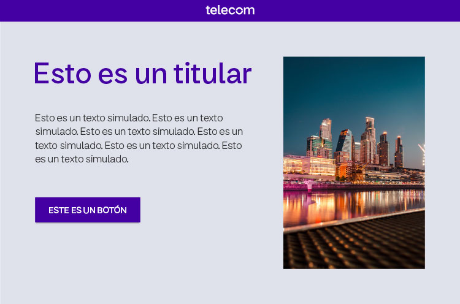
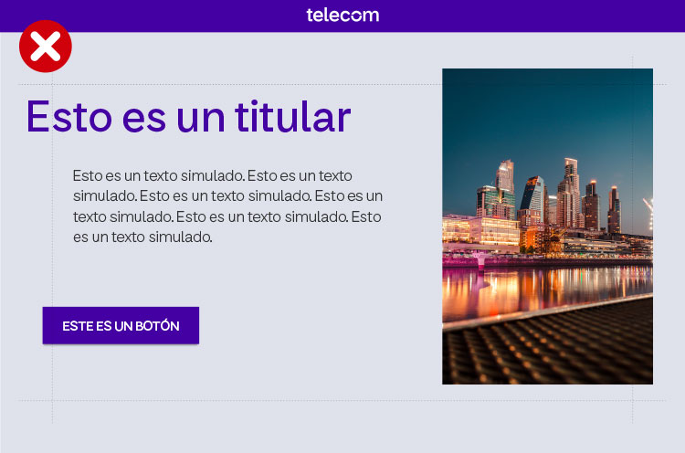
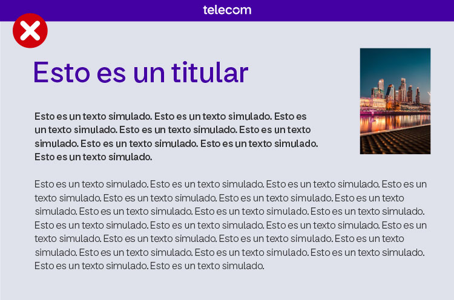
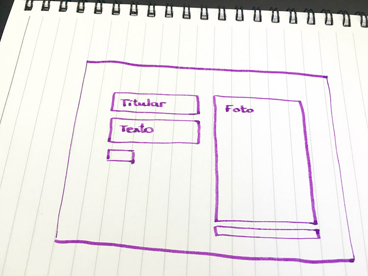
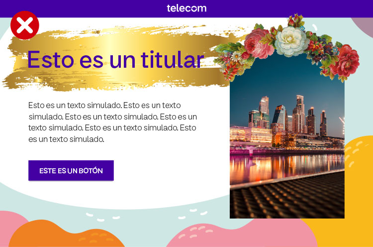
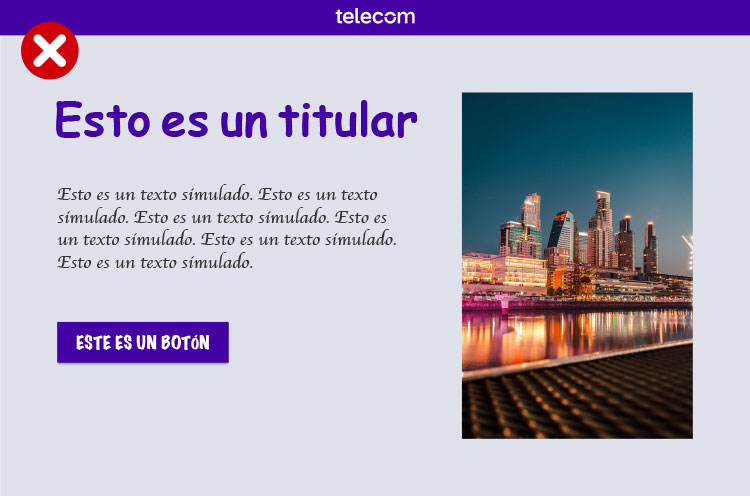
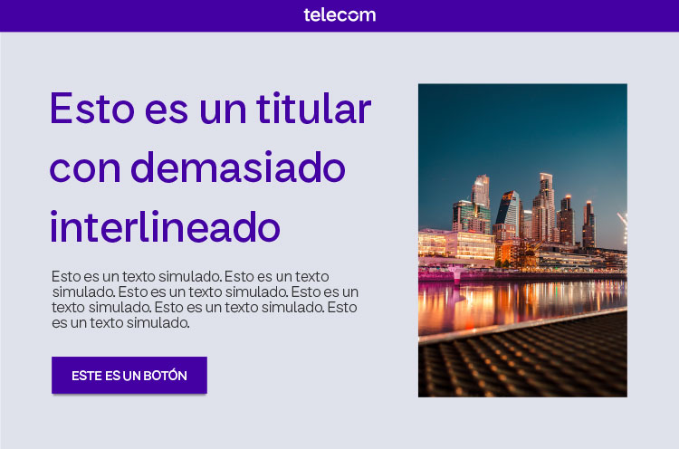
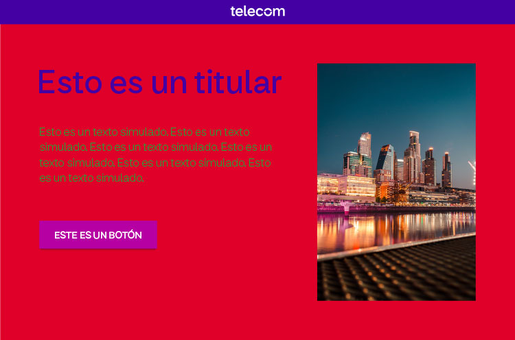
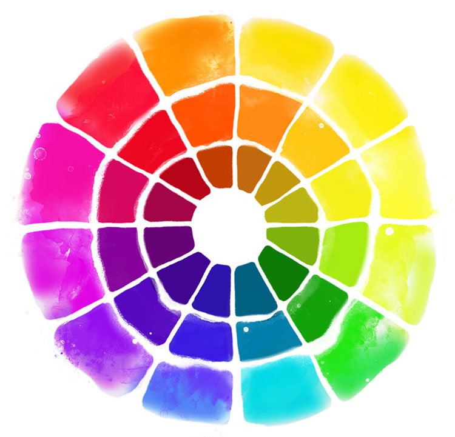
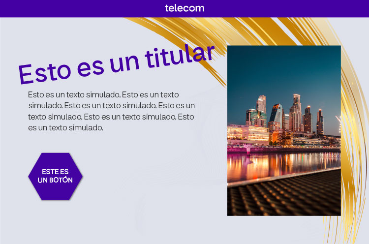

La idea de que algo tiene más valor cuanto más recargado esté es antigua. Algo en apariencia simple puede tener un gran trabajo de conceptualización detrás.
Es mejor si tratás de no incluir demasiados elementos en tu diseño.
Cuanto menor sea la mancha de texto con respecto al espacio en blanco, más limpio y elegante se verá el diseño.
Alineá bien los diferentes elementos. Por ejemplo, si la composición está alineada a la izquierda, procurá que el margen izquierdo coincida en los diferentes bloques (título, entradilla, foto…) para que no se vean escalones antiestéticos.
Redacta el texto aparte y míralo varias veces para ver si podés reducirlo sin que pierda significado. Hacé el esfuerzo de eliminar todo lo superfluo. Por ejemplo, locuciones que no aporten significado en sí mismas ("sin embargo", "como no podía ser de otra manera"), adjetivos o repeticiones.
En lugar de empezar a poner los elementos sin más en el lienzo en blanco, es útil comenzar haciendo un esquema en un papel. Te va a ayudar a tomar decisiones y a hacer cambios de forma más ágil.
Un error muy común es el de no definir la jerarquía visual de los elementos. Si todo destaca, nada destaca.
Es recomendable pensar qué es lo que querés que resalte más, que el lector vea a primera vista. Preguntate qué dejarías si solo pudieras dejar una cosa, y destácala. A partir de ahí, andá definiendo jerárquicamente el resto de elementos. ¿Es más importante el eslogan o el número de teléfono?
Elegí decorar tu pieza gráfica con ilustraciones y te vas a asegurar de que quede coherente. Ilustrar el mismo texto con una fotografía antigua en blanco y negro y una infografía colorida con líneas infantiles (por ejemplo) es una elección arriesgada que seguramente haga que el diseño parezca grotesco.
Intenta que la pieza sea homogénea (solo fotos o solo dibujos, y no ambos recursos mezclados).
Por regla general, elegir una tipografía de fantasía o que simule estar manuscrita empeora la legibilidad. Solo están recomendadas para títulos y no para manchas de texto amplias (lo que se suele llamar "texto corrido").
Las tipografías "de palo seco", sin serif o ribetes (como Arial) suelen dar una imagen más moderna que las tipografías con serifas (como Times New Roman). Estas últimas se han utilizado tradicionalmente para documentos más largos y no tanto para carteles o folletos.
Por supuesto, existen tipografías con serifas muy modernas. Pero, si no dominas mucho el tema, quizá sea mejor que vayas a lo fácil y utilices un acierto seguro como Helvética.
Procurá que haya, a lo sumo, dos tipografías diferentes. Por ejemplo, una en el titular y otra en el texto. Y si vas a utilizar dos distintas, procurá que sean muy diferentes entre ellas (pero que combinen). Si se parecen mucho, es mejor usar solo una.
Tampoco abuses de las cursivas, negritas o colores: cada cambio de estilo en el texto debe estar justificado por una cuestión semántica. Si esa frase debe ir destacada (por ejemplo, una promoción) o debe ser más discreta que el resto (por ejemplo, una anotación al pie), podés cambiar su tamaño o estilo.
En el primer caso, podrías usar una negrita. En el segundo, un tamaño más pequeño y una cursiva. Si no hay un motivo como estos, quizá es mejor que no lo hagas. Lo uniforme y homogéneo suele ser más elegante.
Cuando el tamaño de letra sea muy grande, reducí el interlineado.
Ocurre sobre todo en los títulos de dos o tres líneas que estas quedan demasiado separadas si se deja el interlineado automático.
Tienen significados distintos. ¿Te fijaste en que los sitios de tecnología no utilizan tonos naranjas o marrones? Esto es porque el azul se asocia a la tecnología. El naranja y el marrón estarían bien para un sitio gastronómica o un bufete de abogados. Navegá en internet para estudiar lo que hicieron los profesionales con otras marcas de tu sector y sacá ideas.
También tenés que tener en cuenta que es más legible una letra oscura sobre fondo claro que una letra clara sobre fondo oscuro.
En áreas con mucho texto, elegí mejor la primera opción.
Con los colores pasa lo mismo que con las tipografías: si hay dos muy parecidos, mejor usar solo uno.
Por ejemplo, incluir dos rojos muy parecidos pero distintos parece un error. Pero incluir dos colores radicalmente opuestos sí puede hacerse (siempre que haya armonía entre ellos). Un truco es elegir colores complementarios (los que están justo en frente en las ruedas de colores): casi siempre "conviven" bien.Recursos como girar el texto, incluir degradados o agregar cajas son perfectamente aceptables si sabes lo que estás haciendo.
Si no te sentís seguro con los programas de diseño, lo más probable es que el resultado no sea el esperado. Abstente de usar herramientas si cada una de esas elecciones no tiene una justificación racional.
Cuando abrís un documento nuevo, ya sea un archivo de Photoshop o un simple Word, tenés que pensar cuál va a ser su uso para establecer los valores adecuados de tamaño y resolución. Si lo haces demasiado pequeño, quizá después no puedas cambiarlo.